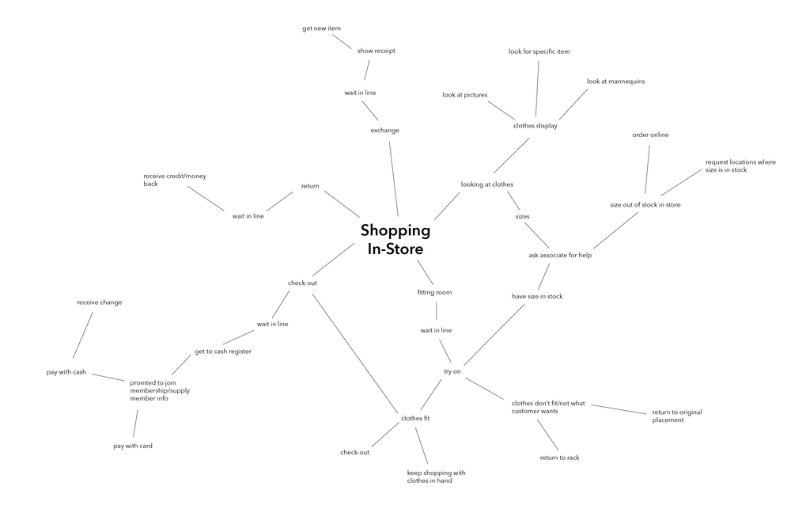
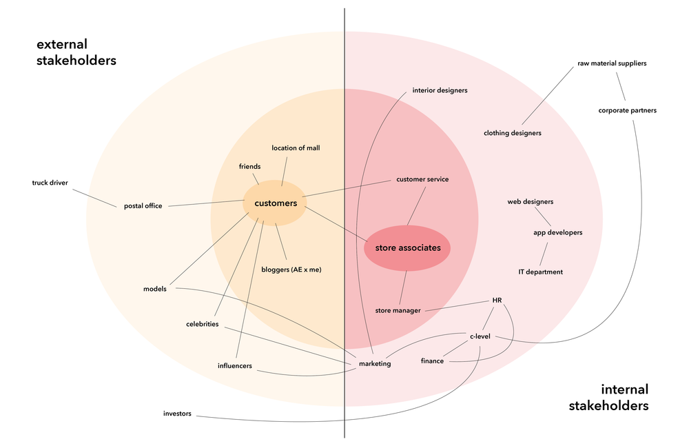
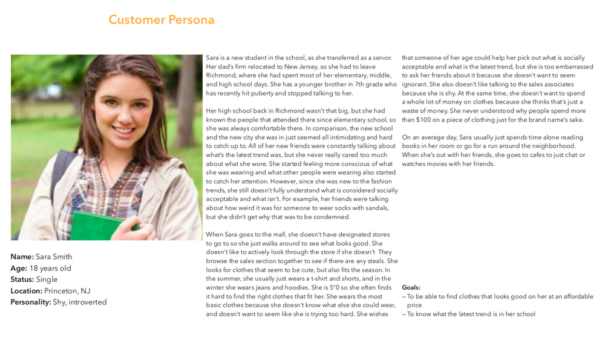
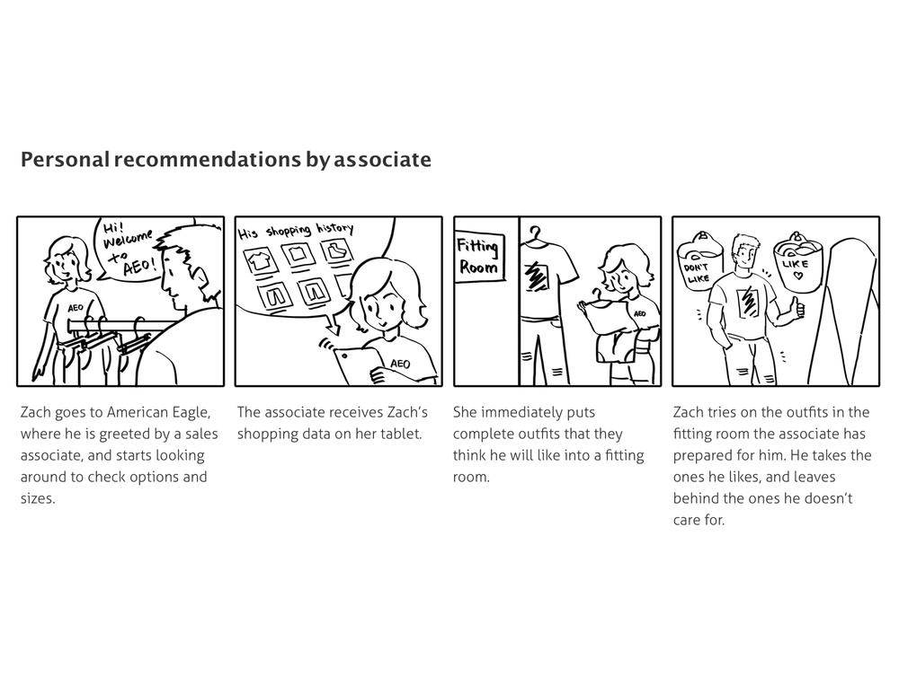

There is a lack of in-store personalization
Representatives from American Eagle Outfitters (AEO) came to our class and requested a new service that would improve one of the following areas:
Our team started out by mapping out different ideas for each of the areas.
After discussing each of the problem areas and generating more ideas based on the mapping, we decided that we wanted to focus in on the problem of the lack of in-store personalization.
We collected data through in-store observation, surveys, and interviews. The following insights are what we derived through each research method:
In-store observation
Survey
Interviews
Concept Map
Stakeholder Map
Service Blueprint - Current State
Our team started out by mapping out different ideas for each of the areas.
After discussing each of the problem areas and generating more ideas based on the mapping, we decided that we wanted to focus in on the problem of the lack of in-store personalization.
From all of our research findings, we identified two specific problem spaces :
Persona
We narrowed down the scope of the problem area to focusing on the paradox of styling shoppers. For our target audience, we decided to focus in on store associates and people currently developing fashion style. The following is the evidence from our survey results supporting our decision:
We identified an opportunity in bridging the gap between the above results and resolving the paradox.
During the research phase, one of the ideas that was discussed for better in-store personalization was integrating the pre-existing AE app with the in-store experience by offering a socially supported shopping experience and providing incentives for participation in a styling ecosystem that feeds into the in-store mannequin displays and also provides valuable information to AEO. We revisited this idea and decided to flesh this out in more detail.
Customers that recommend outfits have a chance to earn points/prizes through the AEO application while providing sample outfits for AEO to utilize to incentivize more purchases.
These bundles will ideally increase customer confidence while crystalizing AEO in customers’ style identities.
Additionally, as the customers purchase recommended bundles, they are given discounts that will reward them for buying more.
This will make them more loyal to the brand and more likely to purchase more from AEO.
When we presented our initial innovation concept to our clients, we got a largely positive feedback. From there, we asked the following how might we questions to guide our design:
We conducted speed dating with the following storyboards to consolidate our design direction.
Storyboards
Idea 1: Associates prepare personalized outfits through customers' shopping data
Idea 2: Outfits on mannequins styled by AEO shoppers
Idea 3: Tag system that suggests matching outfits and provides discounts
Speed Dating Results
Based on these results, we consolidated a concept that we named Trend Tagger:
a social shopping experience that would involve AE customers in the co-creation of value by inviting them to style upcoming trends, incorporating social voting and rewards, and bundling merchandise in-store.
Trend Tagger is a concept that bridges digital and in-store shopping experiences, and thus it was important for us to test both components through eser enactments for physical shopping experience and online styling experience with rough prototypes.
We focused on the following questions for user enactments:
For the paper prototypes, we focused on the following questions:
How might American Eagle Outfitters bridge its digital experience with its in-store shopping experience?
Through this service, customers receive AEO’s existing loyalty program (AEO Connected) when they submit an outfit that they styled for community voting. The top three customers whose styled outfits receive the most votes win the styled merchandise as a reward.
In-store, the outfits of the winning styles are displayed with recogntion to the customer stylists. Along with the outfits, a sign of the Trend Tagger are displayed, and individual items from the outfits have a tag of the Trend Tagger to show that when it’s purchased in a bundle with the matching tag, the outfit will be discounted.
Trend Tagger yields greater in-store wallet share for American Eagle by incentivizing customers to purchase different items, rich customer data through new AEO Connected sign-ups and co-created styles, and greater confidence for customers from socially-affirming styling.